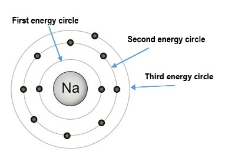

An interesting fact about atoms is that their electrons can only have certain amounts of energy. The electrons can't just have any amount of energy. The energies that electrons are "allowed" to have are represented by Energy circles.
The energy levels of electrons within atoms represent the total energy of the electrons, and include both their Kinetic and Potential energies. Interestingly, the kinetic energy of electrons actually decreases as the energy levels get higher (or are farther from the nucleus of the atoms). However, the potential energy of the electrons due to the attractive electric force between the electrons and protons in the nucleus increases as electrons go to higher energy levels (farther from the nucleus). The total energy increases in orbits that are farther from the nucleus because the increase in potential energy is greater than the decrease in kinetic energy with increasing energy levels. As a result, there is a net gain in energy.
In other words, electrons have the least amount of total (kinetic & potential) energy at the first energy circle. They have the second-least amount of total energy at the second energy level. Etc.
Below is an example of a sodium (Na) atom with its three Energy levels (or Energy Circles) shown:



***Note for Teachers: You can access more information about this website and find other resources for science inquiry on the ISP Tutor website.
©2021 Klahr Lab, Carnegie Mellon University. All Rights Reserved
Carnegie Mellon University | Dept. of Psychology | 5000 Forbes Ave. | Pittsburgh, PA 15213 The TED project was funded in part by the Institute of Education Science (IES), Grant R305H060034, and in part by the National Science Foundation, Grant SBE035442. The ISP Tutor project is funded by IES, Grant R305A170176.
The research reported here was supported by the Institute of Education Sciences, U.S. Department of Education, through Grant R305A170176 to Carnegie Mellon University. The opinions expressed are those of the authors and do not represent views of the Institute or the U.S. Department of Education.